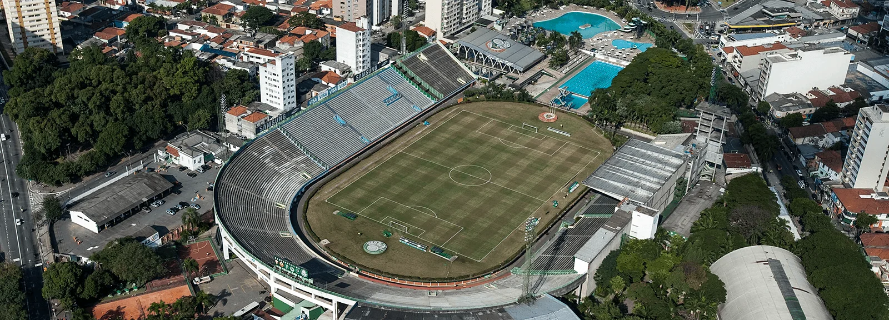

História do clube
Antes de ser Palmeiras.
Uma reunião no centro de São Paulo e uma tarde no Pacaembu dão as duas datas de nascimento de um mesmo clube.

26 de agosto · São Paulo
Um time para a colônia
Na Rua São Bento, imigrantes italianos se reuniram para fundar o Palestra Italia. Queriam ver a comunidade italiana representada no futebol paulista. O nome atravessou as primeiras conquistas e ficou ligado ao campo do Parque Antarctica.
20 de setembro · Pacaembu
A Arrancada Heroica
Com o Brasil em guerra contra a Itália, o clube sofreu pressão para abandonar a referência à origem italiana. Uma semana depois de jogar como Palestra de São Paulo, a equipe entrou no Pacaembu carregando a bandeira brasileira.
Na estreia do nome Palmeiras, Cláudio, Del Nero e Echevarrieta fizeram os gols do 3 a 1 sobre o São Paulo. A nova camisa já saía de campo campeã paulista.